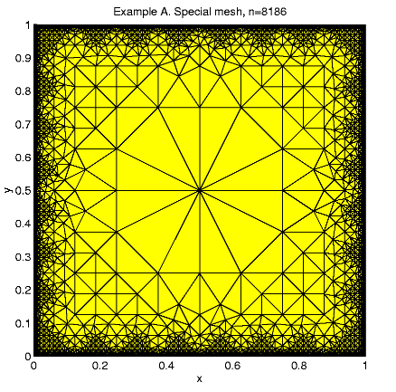
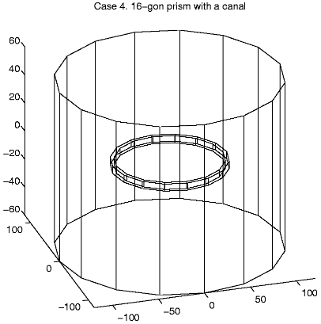

We consider the following boundary value problem:
We create Shishkin mesh for solving this problem.
h
1-2h
h
n/4
n/2
n/4
| h = min |
|
n is the number of the mesh points. |
In the examples we fix the parameters h = 0.05 and the number of mesh points N = 1089. Then we can calculate :
| h = 2e ln | (N |
|
) = lnN, e = |
|
» 0.0071, e2 = 5.1122 x 10-5. |
Other mesh type is created ("special mesh'') in the following rules: at the first step a coarse triangulation is done, and at the refinement steps a size-function
| sT = |
ì
í î |
|
|
|  |
We consider the following boundary value problem:
The unite cube is divided of 4 domains:
- D1: a central domain , [1-2h,1-2h]3,
where we have to place 1/8 of all N 3D mesh points;
- D2: 6 square prism subdomains,
each has a face [h,1-2h]2
at the center of a cube face and third dimension h.
There we should place 1/16 nodes;
- D3: 12 square prism subdomains,
each has an edge [h,1-2h],
at the center of a cube edge and size h x h
x
1-2h. In this subdomain 1/32 nodes have to be
placed;
- D4: 8 cube [0, h]3
subdomains, each one has a vertex, which coincides with a cube vertex contains
1/64 part of all nodes.
It follows that the distribution of the nodes should be:
|
s = |
|
= |
ì ï í ï î |
|
We fix the parameter h=0.1, h=2e ln(N1/3) = 2/3ln N, e = 3/(20 lnN).
For N = 6533, e » 0.0171, e2
=
2.9157 x 10-4, we have: 30528 tetrahedra,
3963 internal nodes, 2570 boundary nodes, 49135 nonzero matrix elements,
210 min solution time.
Distribution of the nodes in subdomains is: D1
8.6%, D2 32.9%, D3
43.2%, D4 15.3%. The maximal solution
value is 1.035.
For N = 46161, e » 0.0140,
e2
=
1.9507 x 10-4, 46161 nodes, 244224 tetrahedra,
35887 internal nodes, 497179 nonzero matrix elements, 5 hours solution
time.
Distribution of the nodes in subdomains: D1
9.5%, D2 35.8%, D3
37.4%, D4 17.3%; the maximal
solution value is 1.024.
 |
| The exact solution is u(x, y) = xy |
|
|
Right hand side can be calculated using the function u.
| b = |
æ
ç ç è |
|
æ
ç ç è |
1 - |
|
x |
ö
÷ ÷ ø |
, |
|
æ
ç ç è |
1 - |
|
y |
ö
÷ ÷ ø |
ö
÷ ÷ ø |
= |
æ
ç ç è |
|
, |
|
ö
÷ ÷, ø |
c = 1, e = 10-4. |
There are boundary layers at x = 1 and y = 1 boundary. The thickness of the boundary layers is h = min{e lnN, 1/2}.
| We define a comparison function u0(x, y) = xy |
|
|
A "special mesh'' is created in the following rules: At the first step the unite square is divided by 16 equal squares and at the next refinement steps a size-function is used. Any triangle with exact 1 vertex at the boundary x = 1 or y = 1 is split by 4 but any triangle with 2 vertexes at the boundary is split by 16. Every other triangle may split only to keep mesh consistent.
There is a significant correlation between the coefficient kd and the errors (dT = kdST). The best value is 0.05.
Errors.
Let u be the exact solution function and u be the solution obtained in the current iteration, i.e. the values ui= u(Pi) are known at every point Pi, which is a mesh node (i = 1, ... , n).
1. Absolute error (l2 error): eabs2 = åi=1n (u(Pi) - ui)2.
2. Relative error: erel2= eabs2 / (åi=1n u(Pi)2 ) = ( åi=1n (u(Pi) - ui)2)/ (åi=1nu(Pi)2).
3. Integral error (L2 error):
| eint = |
ó
õ |
|
(u(x, y) - u(x, y))2dxdy = |
|
ó
õ |
|
(u(x, y)- u(x, y))2dxdy » |
|
|
æ
ç ç è |
(u(Pij)- |
|
( ui + uj))2+ (u(Pjk)- |
|
( uj + uk))2 + (u(Pki) - |
|
( uk + ui))2 |
ö
÷ ÷ ø |
ST, |
4. Maximal error (l¥ error): emax= maxi=1,... , n |u(Pi) - ui|.
Tables contain: node numbers eabs erel eint emax.
Regular mesh
9 1.737e+01 6.947e+01 5.174e+01 1.737e+01 145 3.588e+01 1.043e+01 2.549e+00 1.657e+01 1089 2.110e+01 2.074e+00 1.503e-01 5.105e+00 4225 1.033e+01 4.957e-01 1.150e-02 1.995e+00 16641 4.183e+00 9.921e-02 1.048e-03 6.665e-01Shishkin mesh h = 3.5 x 10-4
1089 7.934e+01 5.391e+00 8.320e-01 9.077e+00Special mesh
25 2.720e+01 3.108e+01 2.019e+01 1.771e+01 63 3.308e+01 1.171e+01 2.825e+00 1.869e+01 171 2.110e+01 3.098e+00 4.002e-01 8.660e+00 470 8.668e+00 7.314e-01 1.430e-02 1.975e+00 1088 3.907e+00 2.009e-01 1.610e-03 6.257e-01 2573 3.786e+00 1.230e-01 3.950e-04 3.603e-01 6616 3.113e+00 6.590e-02 1.697e-04 2.579e-01The next tables present the comparison function errors.
Regular mesh
9 4.579e-03 3.664e-03 1.306e-03 4.579e-03 145 3.911e-03 9.427e-04 6.723e-07 8.088e-04 1089 2.839e-03 2.541e-04 2.216e-08 3.567e-04 4225 1.252e-03 5.732e-05 1.341e-09 8.267e-05 16641 4.626e-04 1.072e-05 8.074e-11 1.623e-05Shishkin mesh h = 3.5 x 10-4
1089 2.105e-02 9.642e-04 8.272e-07 3.762e-03Special mesh
25 2.026e-03 1.080e-03 8.149e-05 1.483e-03 63 5.544e-02 1.437e-02 7.475e-05 2.655e-02 171 7.160e-02 8.925e-03 6.852e-05 2.203e-02 470 9.520e-02 6.993e-03 6.455e-05 2.126e-02 1088 1.108e-01 5.034e-03 6.481e-05 2.131e-02 2573 1.173e-01 3.339e-03 5.819e-05 1.827e-02 6616 1.570e-01 2.893e-03 5.819e-05 1.827e-02
 |
 |
 |
 |
The domain W consists of two parts W0 Ì W, W0 << W and W \W0.
| µ = |
ì
í î |
|
Case 1. W = [0, 1]3,
W0
= (0.5, 0.5) + [0, 0.05]3
Case 2. W = [-60, 60]2
x[0,
120],
W0
= ([-31,
31]2\[-29, 29]2)
x [57.5, 62.5].
Case 3. Let K be the unite 16-gone. Then
W=120*Kx
[-60, 60],
W0
=
(62 x K)\(58*K) x [-2.5, 2.5].
 |
 |
|  |
 |
In order to present intersection of the solution u and a plane
x=const,
we calculate and visualize the "difference''
u - ul = u(x,
y,
z)
- z.
 |
 |
 |
 |
 |
This document was translated from LATEX by HEVEA.